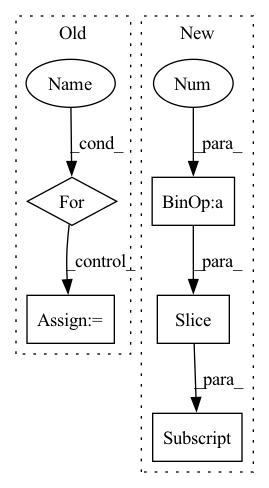

Pattern ID :7115

Before Change
inp = activate(ctx, inp)
inp = inp.reshape(*transposed_shape)
inp = jnp.einsum("bfsr,sz,sz->bfrz", inp, wgt, mask)
for _ in range(len(weights) - 1):
inp = inp.transpose(0, 1, 3, 2)
inp = inp.reshape(*shape)
return inp.transpose(0, 2, 3, 1).reshape(original_shape)
After Change
inp = inp.reshape(ctx.dims.batch, -1, *[ctx.dims.spatial_mixing_kernel] * max_dims, ctx.dims.features)
original_dims = "".join(chr(ord("a") + i) for i in range(len(inp.ndim)))
for i, wgt in enumerate(weights):
new_dims = original_dims[:i + 2] + "z" + original_dims[i + 3:]
reduced_dim = original_dims[i + 2]
if i > 0:
inp = activate(inp)
inp = jnp.einsum(f"{original_dims},{reduced_dim}z,{reduced_dim}z->{new_dims}", inp, wgt, mask)
In pattern: SUPERPATTERN
Frequency: 3
Non-data size: 5
Instances
Fragment ID: 23683833
Project Name: homebrewnlp/homebrewnlp-jax
Commit Name: e3894fce349563809e673ef1a497a476f9bd8d34
Time: 2022-09-01
Author: 39779310+ClashLuke@users.noreply.github.com
File Name: src/model/mixer.py
M Class Name: AnonimousClass
N Class Name: AnonimousClass
M Method Name: mix(2)
N Method Name: mix(2)
M Parent Class:
N Parent Class:
M File Name: src/model/mixer.py
N File Name: src/model/mixer.py
M Start Line: 12
M End Line: 34
N Start Line: 14
N End Line: 32
'>
Before Change
_in_channels, _growth_rate = growth_rate[num_encoder_blocks - 1], growth_rate[num_encoder_blocks]
bottleneck_bins = n_bins
for idx in range(num_encoder_blocks):
bottleneck_bins //= scale[0]
bottleneck_dense_block = choose_dense_rnn_block(
rnn_type, rnn_position,
After Change
_in_channels = _growth_rate
skip_channels = growth_rate[num_encoder_blocks - 1::-1]
n_bins_detail = n_bins_detail[num_encoder_blocks - 1::-1]
decoder = Decoder(
_in_channels, skip_channels, growth_rate[num_encoder_blocks + 1:], hidden_channels=hidden_channels[num_encoder_blocks + 1:],
'>
Fragment ID: 23683825
Project Name: tky823/dnn-based_source_separation
Commit Name: 3517c0809f61a23ca167956de8c040d4f725f822
Time: 2021-10-18
Author: delta9guitar97@gmail.com
File Name: src/models/m_dense_rnn.py
M Class Name: MDenseRNNBackbone
N Class Name: MDenseRNNBackbone
M Method Name: __init__(17)
N Method Name: __init__(18)
M Parent Class: nn.Module
N Parent Class: nn.Module
M File Name: src/models/m_dense_rnn.py
N File Name: src/models/m_dense_rnn.py
M Start Line: 19
M End Line: 67
N Start Line: 37
N End Line: 89
'>
Before Change
else:
quantized_tensors = []
// pylint: disable=protected-access
for index, op in enumerate(tensor_quantizer._cppOp):
// pylint: disable=protected-access
tensor_slice = tensor.select(tensor_quantizer._ch_axis, index).contiguous(memory_format=torch.contiguous_format)
computed_tensor = op.quantizeDequantize(tensor_slice, tensor_quantizer._encoding[index],
round_mode, tensor.is_cuda)
quantized_tensors.append(computed_tensor)
After Change
sizes = [*tensor.shape, 1]
num_channel = sizes[tensor_quantizer.channel_axis]
num_element = functools.reduce(lambda x, y: x * y, sizes)
num_element_per_channel = functools.reduce(lambda x, y: x * y, sizes[tensor_quantizer.channel_axis + 1:])
// Vectorized CppOp
// pylint: disable=protected-access
quantized_tensor = tensor_quantizer._cppOp[0].quantizeDequantizePerChannel(tensor, tensor_quantizer._encoding,
'>
Fragment ID: 23683831
Project Name: quic/aimet
Commit Name: 130e52a7926e3dfde72098b6fbf27f8daa9e9865
Time: 2023-04-25
Author: quic_juiylin@quicinc.com
File Name: TrainingExtensions/torch/src/python/aimet_torch/tensor_quantizer.py
M Class Name: QuantizeDequantize
N Class Name: QuantizeDequantize
M Method Name: _per_channel_quantize_dequantize(3)
N Method Name: _per_channel_quantize_dequantize(3)
M Parent Class: torch.autograd.Function
N Parent Class: torch.autograd.Function
M File Name: TrainingExtensions/torch/src/python/aimet_torch/tensor_quantizer.py
N File Name: TrainingExtensions/torch/src/python/aimet_torch/tensor_quantizer.py
M Start Line: 1080
M End Line: 1088
N Start Line: 1083
N End Line: 1092